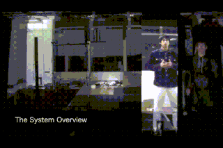

Collapsed formation in a group dance will greatly reduce the quality of the performance even if the dance in the group is synchronized with music. Therefore, learning the formation of a dance in a group is as important as learning its choreography. However,
if someone cannot participate in practice, it is difficult for the rest of the members to gain a sense of the proper formation in practice. We propose a practice-support system for performing the formation smoothly using a self-propelled
screen even if there is no dance partner. We developed a prototype of the system and investigated whether a sense of presence provided by both methods of practicing formations was close to the sense we really obtain when we dance with
humans. The result verified that the sense of dancing with a projected video was closest to the sense of dancing with a dancer, and the trajectory information from dancing with a self-propelled robot was close to the trajectory information
from dancing with a dancer. Practicing in situations similar to real ones is able to be done by combining these two methods. Furthermore, we investigated whether the self-propelled screen obtained the advantages of dancing with both methods
and found that it only obtained advantages of dancing with projected video.